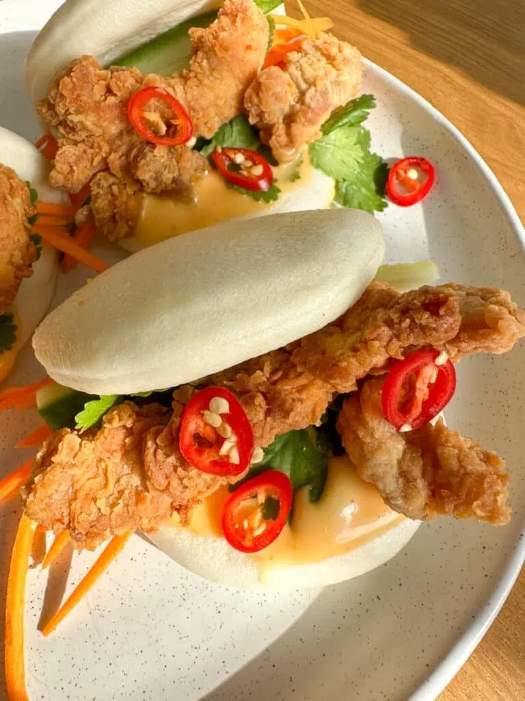

Beef and Brocoli Noodles

Bursting with flavour!
I love using beef mince/ground beef in my recipes. It’s a low-cost option, the kids happily eat it and it’s so incredibly quick and easy to prepare. This dinner is effortless with the noodles all being cooked in the one pan (because some nights even waiting for water to boil isn’t an option) and it’s a great “catch-all” meal where you can use up whatever veg you have in the fridge.
Two big handfuls of vegetables are required for this recipe; some great options are bean sprouts, shredded cabbage, carrot, mushrooms, bok choy or baby corn. Aside from being easy, this sauce is outrageously delicious. The hoisin sauce makes it sweet and sticky with a great depth of flavour and if that’s not all wonderful enough, you can have this delicious family dinner on the table in less than 20 minutes!
Ingredients
- 16 bao buns, steamed as per packet instructions (see note 1)
- 2 tbsp tamari or all-purpose soy sauce, plus extra to serve
- 1 tsp garlic, freshly minced
- 2 eggs, whisked
- 500 g chicken thigh fillets, cut into strips
- 1.5 cups plain/all-purpose flour (see note 2)
- 1 tsp salt
- 1/2 tsp black pepper
- Oil for frying (see note 3)
- 1 cup carrot, julienned or shredded
- 2 cucumbers, cut into batons
- 1/2 bunch coriander/cilantro, leaves picked
- 1/2 cup sriracha mayonnaise (or regular mayonnaise for littles)
- 2 red chillies, sliced to serve (optional)
Instructions
- Place the tamari or soy sauce, garlic, eggs and chicken in a medium-sized bowl. Toss to coat the chicken.
- Place the flour, salt and pepper in a separate large bowl. Add the chicken (draining away the egg mixture) and toss in the flour to coat. Ensure the chicken is fully coated in flour on all sides.
- Heat the oil on medium heat. Cook the chicken in batches for 6-8 minutes, turning once halfway through, then set aside to drain on a paper towel.
- Serve the bao buns topped with the crispy chicken, carrot, cucumber, coriander, sriracha mayo and a drizzle of tamari or soy sauce. Add chilli if using.